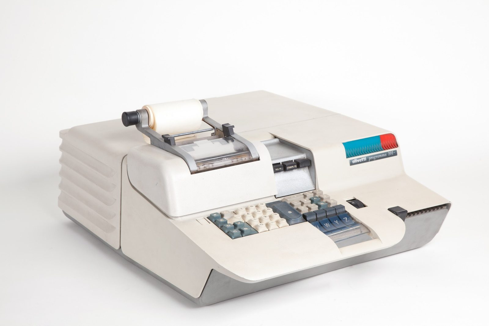

Unit 1 · Lesson 6
The switch gets small
A switch with no moving parts got so small that billions of them now fit in your pocket.
The story
Early computers used valves: glass tubes that were big, hot and broke easily. In December 1947, at Bell Labs in the USA, John Bardeen and Walter Brattain made the first transistor, a small switch with no moving parts. William Shockley soon designed a better one. All three shared the Nobel Prize in Physics in 1956.


Shockley started a company in California. In 1957 eight young engineers left him; people called them the 'traitorous eight'. They started Fairchild Semiconductor, and in 1968 two of them, Robert Noyce and Gordon Moore, founded Intel. The area became known as Silicon Valley.
Italy has a part in this story. In Ivrea, an Olivetti team led by Pier Giorgio Perotto built the Programma 101, a programmable computer that sat on a desk. It was shown in New York in October 1965, and about 44,000 were sold. NASA bought some. Then, in 1971, Federico Faggin, from Vicenza, led the design of the Intel 4004: a whole CPU on one chip, with about 2,300 transistors.


The garage legend leaves out the people who built the chips by hand. In 1965 Fairchild started making parts at Shiprock, on the Navajo Nation in New Mexico; a large factory opened in 1969. At its peak about 1,200 people worked there, almost all Navajo, most of them women. The work was precise, done under a microscope. The company praised their skill, but wages were low. The jobs mattered in a poor area, and many workers were proud of them. In 1975, after 140 workers lost their jobs, armed members of the American Indian Movement occupied the factory for about a week. Fairchild then closed it for good.

In 1965 Gordon Moore noticed that the number of parts on a chip doubled about every year. In 1975 he changed it to about every two years. People call it Moore's law, but it is an observation, not a law of physics.
The science
A transistor is a switch with no moving parts
Remember the relay: a switch pressed by electricity, with a moving metal contact. A transistor does the same job, but nothing moves: a small electric signal opens or closes it. So it can be tiny, fast and cool.


A chip: many transistors on silicon
A chip (an integrated circuit) is many transistors and their wires made together on one small piece of silicon. Silicon is a material made from sand. In 1971 the Intel 4004 put a whole CPU on one chip. Today a phone chip has billions of transistors.


The clock: the metronome
The clock gives the beat, like a metronome. GHz (gigahertz) means billions of beats a second: 3.2 GHz is 3.2 billion beats a second. More GHz is faster only when the chips have the same design. A newer chip can do more work in each beat.
- The cook = CPU core
- The metronome = clock (GHz)
- The countertop = cache
- The workbench = RAM
- The pantry = storage (SSD / HDD)
Cores: more cooks
A core is one cook. 'Octa-core' means eight cooks. But eight cooks share one kitchen, and many steps must wait for the step before. So eight cores are faster, but not eight times faster. The countertop (cache) is a small, very fast space right under the cooks' hands.
- The cook = CPU core
- The metronome = clock (GHz)
- The countertop = cache
- The workbench = RAM
- The pantry = storage (SSD / HDD)
Check now
Quick questions. You see the answer at once.
A transistor is a switch with moving metal parts.
True or false?
A clock runs at 3 GHz: 3 billion beats a second. How many beats does it make in 2 seconds? Answer in billions.
Who led the design of the Intel 4004, the first CPU on one chip?
- Federico Faggin
- William Shockley
- Pier Giorgio Perotto
Try it
Each dot is one chip. Switch between the linear and the log scale, and press 'Find your phone'.
Paper version
Transistors on one chip (rounded): 1971 Intel 4004: about 2,300 · 1974 Intel 8080: about 4,500 · 1978 Intel 8086: 29,000 · 1985 Intel 80386: 275,000 · 1989 Intel 80486: about 1.2 million · 1993 Pentium: 3.1 million · 2000 Pentium 4: 42 million · 2006 Core 2 Duo: 291 million · 2013 Apple A7 (iPhone 5s): about 1 billion · 2020 Apple A14 (iPhone 12): 11.8 billion · 2023 Apple A17 Pro (iPhone 15 Pro): 19 billion · 2024 NVIDIA B200 (two dies): 208 billion. On a linear scale the early chips look like zero. On a log scale (each line is 10 times the one below) the dots make an almost straight line: doubling about every two years.
Your turn
Exercises
From ★☆☆ (easy) to ★★★ (hard). Use a hint if you are stuck.
-
Exercise 1 ★☆☆
What did the transistor replace in computers?
- the battery
- the valve (a big, hot glass tube)
- the keyboard
-
Exercise 2 ★☆☆
A phone listing says 'Octa-core 3.2 GHz'. How many cores (cooks) does it have?
-
Exercise 3 ★☆☆
Match each part to its place in the kitchen.
- CPU core — ?
- clock — ?
- cache — ?
- RAM — ?
-
Exercise 4 ★★☆
Put these events in time order.
- the first transistor (1947)
- the Intel 4004 (1971)
- the Olivetti Programma 101 (1965)
- the traitorous eight start Fairchild (1957)
-
Exercise 5 ★★☆
A phone with 8 cores is 8 times faster than the same phone with 1 core.
True or false?
-
Exercise 6 ★★☆
Why can a 2.5 GHz chip from this year beat a 3 GHz chip from 2015?
- its newer design does more work in each beat
- GHz do not matter at all
- old chips get slower every year
-
Exercise 7 ★★★
The Intel 4004 had about 2,300 transistors in 1971. If the number doubles every two years, about how many transistors would a chip have in 1981?
-
Exercise 8 ★★★
The Silicon Valley story often starts with young engineers. Tell the Shiprock story in three sentences, and give one good side and one bad side of it.
In one sentence
A transistor is a tiny switch; a chip is billions of them, keeping time with a clock.
Words of the chapter
- transistor
- a switch with no moving parts transistor
- valve
- a big, hot glass tube used as a switch before transistors valvola termoionica
- chip (integrated circuit)
- many transistors made together on one piece of silicon chip (circuito integrato)
- silicon
- a material made from sand, used to make chips silicio
- clock (GHz)
- the metronome: billions of beats a second clock (GHz)
- core
- one cook; more cooks are not N times faster core
- Moore's law
- transistors per chip doubling about every two years legge di Moore
- Silicon Valley
- the area of California where chip companies grew Silicon Valley